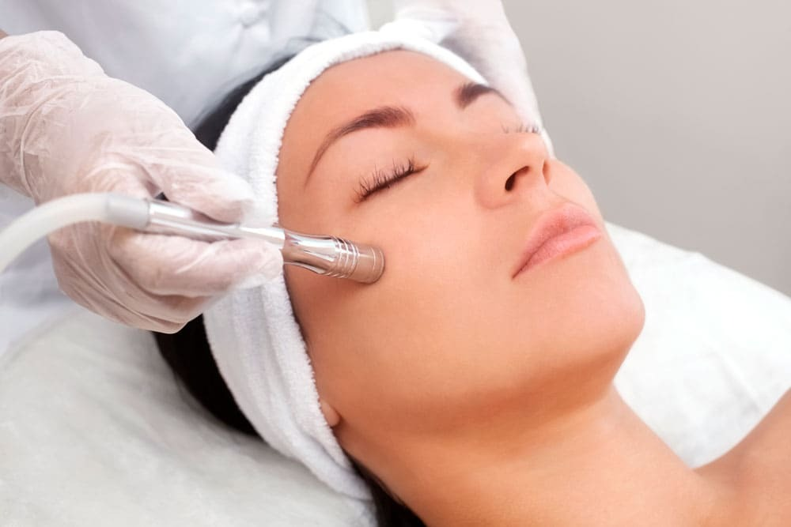
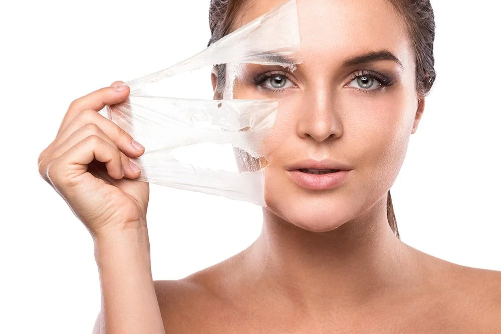
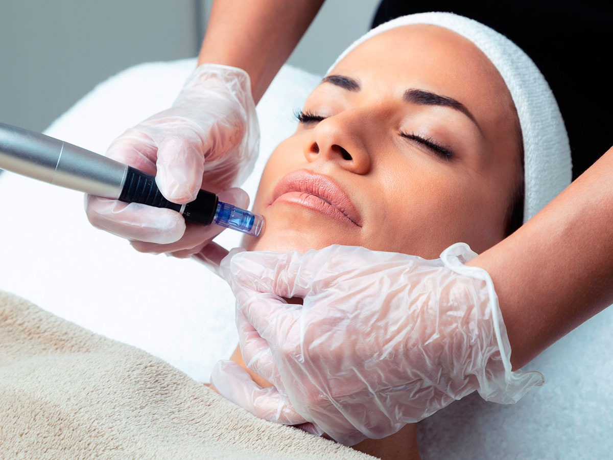
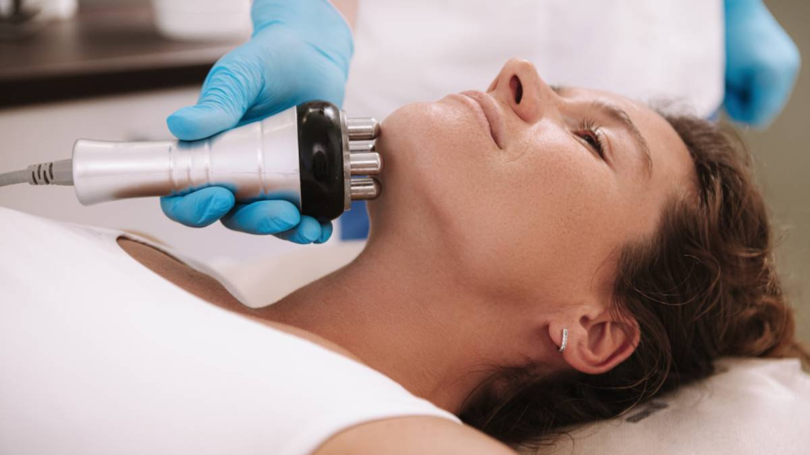
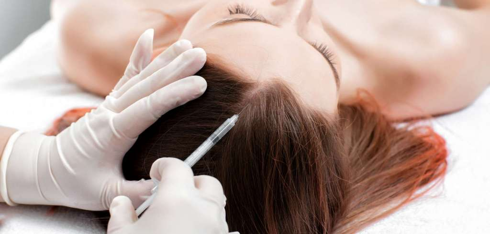
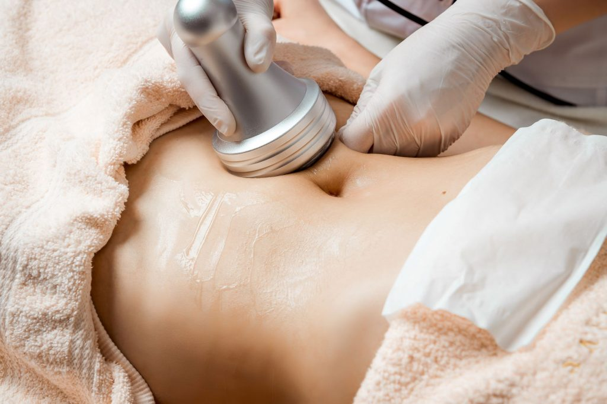

Tratamientos
En Garbo cada tratamiento se realiza bajo un enfoque profesional, personalizado y orientado a la salud integral de la piel. La elección de cada técnica responde a una evaluación previa, asegurando que el procedimiento sea adecuado para las necesidades específicas de cada paciente.
El objetivo no es solo mejorar la apariencia, sino fortalecer la piel, estimular sus funciones naturales y acompañar procesos de regeneración de manera responsable.

Limpieza Profunda / Dermoabrasión
La limpieza profunda permite eliminar impurezas, células muertas y exceso de sebo acumulado en la superficie cutánea. Mejora la textura, favorece la oxigenación y prepara la piel para tratamientos posteriores.
La dermoabrasión complementa el proceso mediante una exfoliación controlada que estimula la renovación celular. Es ideal para pieles con poros dilatados, textura irregular o signos de congestión.

Peeling Estacional
El peeling estacional consiste en la aplicación de activos específicos que favorecen la renovación celular y mejoran manchas, líneas finas y textura.
Se realiza en períodos adecuados del año, respetando protocolos de seguridad y tiempos de recuperación. El objetivo es estimular la regeneración cutánea de manera progresiva y controlada.

Dermapen
El Dermapen es un dispositivo que mediante micropunciones controladas genera microcanales en la piel. Estas microperforaciones permiten la penetración profunda de activos seleccionados según el objetivo del tratamiento.
Puede utilizarse para estimular colágeno, mejorar cicatrices, líneas de expresión, textura irregular o pérdida de firmeza. El procedimiento activa los mecanismos naturales de regeneración cutánea.

Radiofrecuencia
La radiofrecuencia utiliza energía térmica para estimular la producción de colágeno y elastina. A través de la generación controlada de calor, se activan procesos de tensión y reafirmación cutánea.
Es un tratamiento indoloro e inocuo, cuyo objetivo principal es tensar la piel y mejorar la firmeza facial o corporal.

Tratamiento Capilar
El tratamiento capilar está orientado a fortalecer el bulbo piloso y frenar la caída. Mediante diferentes herramientas y técnicas se favorece la penetración de activos específicos que estimulan el crecimiento.
El procedimiento acelera las fases de crecimiento capilar y mejora la calidad del cabello, contribuyendo a una mayor densidad y fortaleza.

Tratamiento Corporal
Los tratamientos corporales están diseñados para mejorar la textura de la piel, estimular la circulación y favorecer procesos de tonificación y modelado.
Se combinan técnicas manuales y aparatología, adaptadas a cada necesidad particular, priorizando siempre la seguridad y el bienestar.
Tecnologías y Equipamiento
Cada tratamiento en Garbo se realiza con equipamiento específico y tecnología profesional seleccionada bajo criterios de calidad y seguridad.
Si deseás conocer en detalle la maquinaria utilizada, su funcionamiento técnico, costos de adquisición y mantenimiento, podés acceder a la sección dedicada.
Conocer tecnologías →